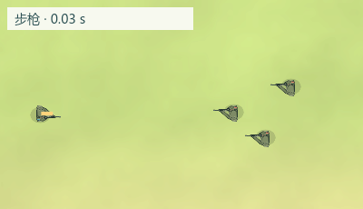
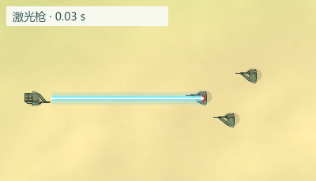
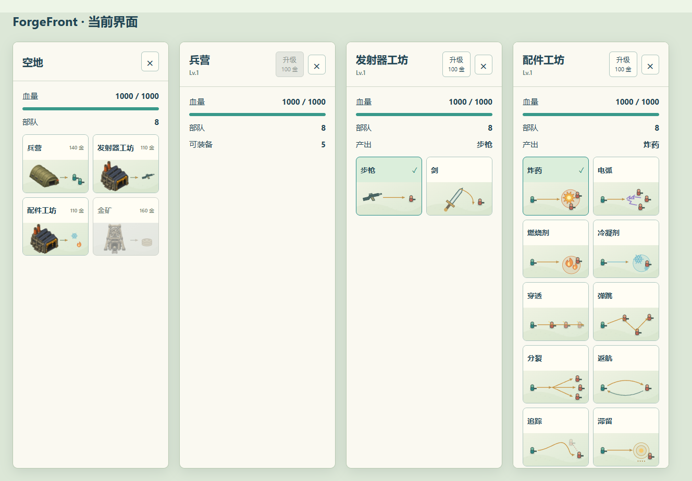
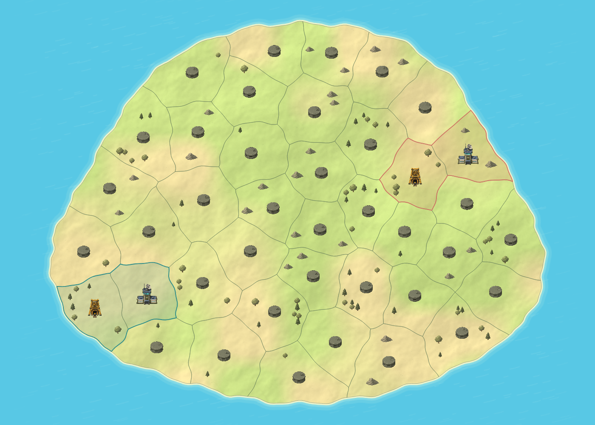
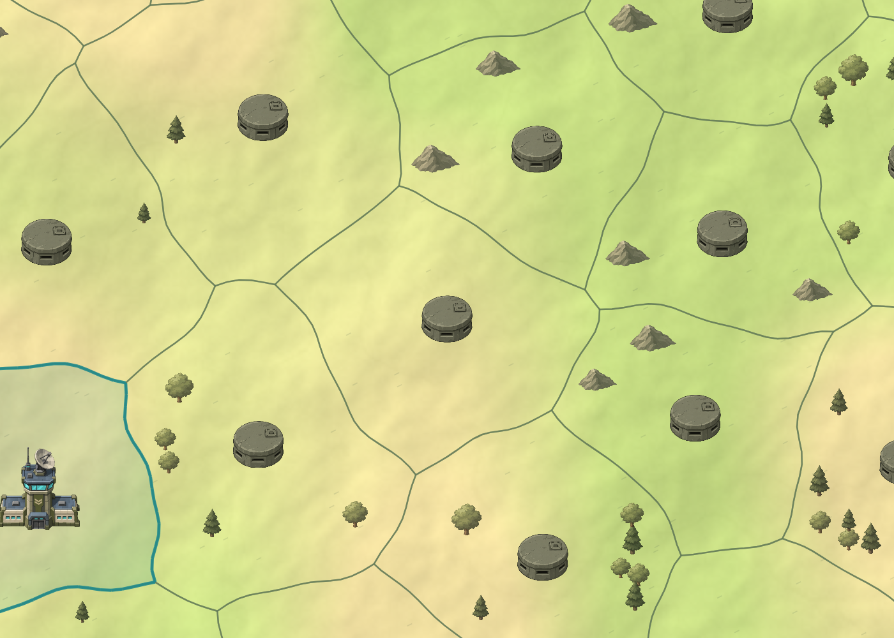

激光枪现已删除，此页保留上一轮演示。查看当前实现
Shift 拖动箭头派出所选部队的一半，奇数向上取整；普通拖动仍派出全部。可以拆分正在行军的部队。游戏内不添加说明文字。
实体弹飞向目标；激光直接连接当前枪口与命中点，显示蓝白亮芯和接触光斑。以下为实际战斗与绘制逻辑离线导出的循环动画，伤害规则不变。


建造、武器、配件图卡继续使用 SVG。截图由当前 GameUI 的 HTML 与 CSS 渲染。

共享边界与海岸使用连续曲线，地块关系和平均面积保持不变；视觉边界与选中范围一致。图片由当前地图生成及地形、边界绘制逻辑离线导出。

